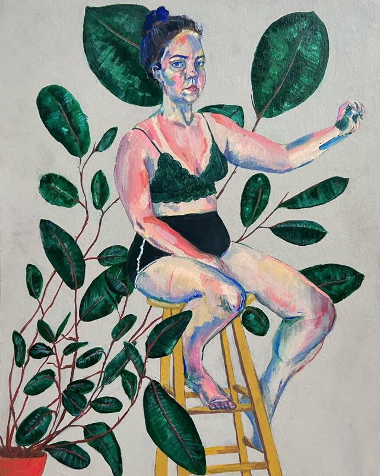
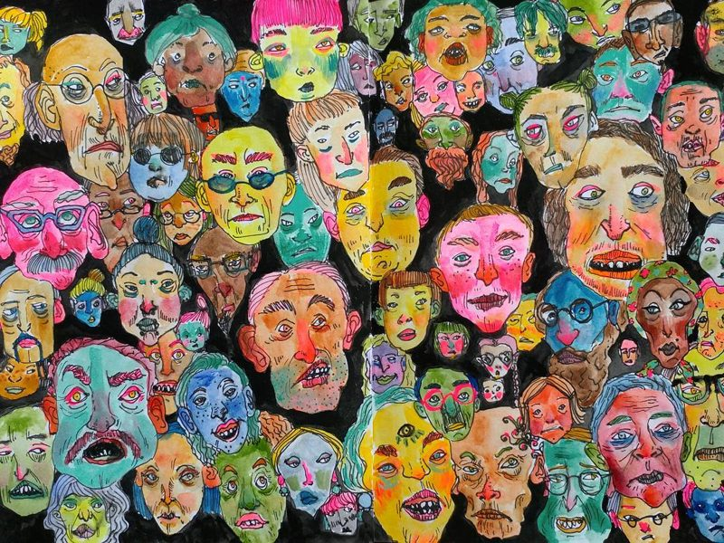
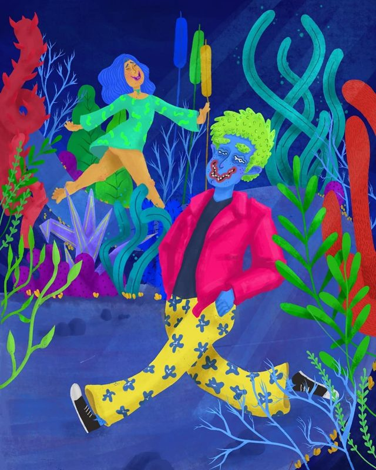
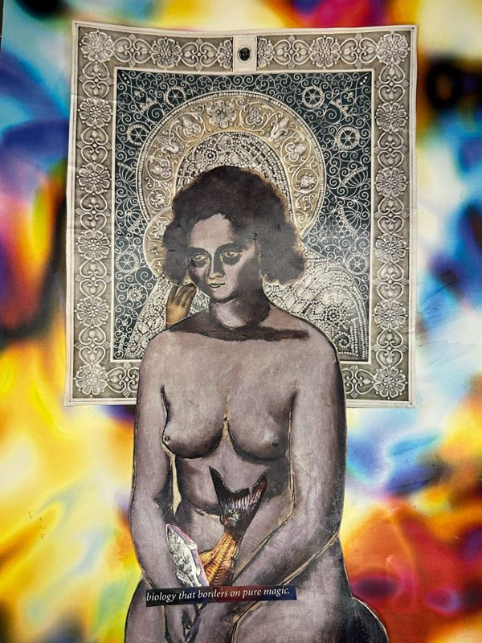

about
Yana Barysheva
A dilettante in a bunch of creative fields. I like to do a lot of different things, though it feels like mostly I just wash dishes.
A dilettante in a bunch of creative fields. I like to do a lot of different things, though it feels like mostly I just wash dishes.
Product & UX Design
15+ years of experience across tech companies of all sizes, with a special fondness for early-stage startups. Currently civic tech-minded.
A few projects made with Claude Code.
I majored in this, then didn't do it for a while, but I'm back. Posting microfiction on Substack. Also, I wrote a book with my mom. Working on short fiction, stay tuned.
Drawing and painting demented portraits, bright and whacky things, cats. Light social commentary.



